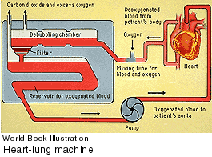

5. The development of machines that replace organ function (middle to
late 1900's)
These machines include the
respirator, renal dialysis machine, and heart-lung pump. The devices
are used to keep patients alive during operative procedures, or when
critical organs fail.

|